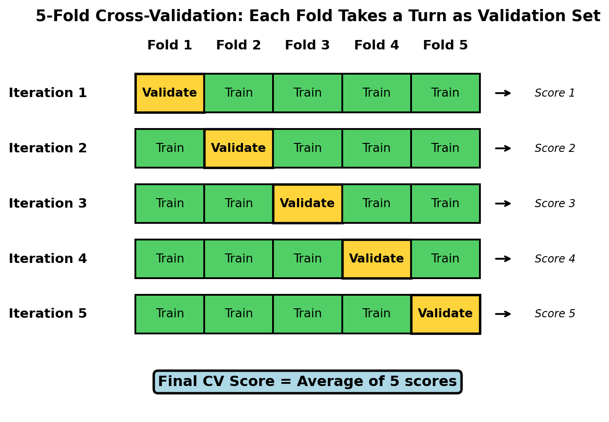
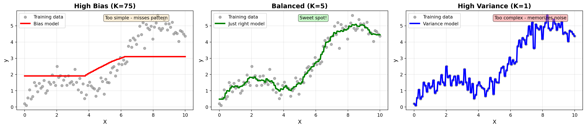

Cross-Validation, Hyperparameter Tuning, and Feature Engineering
Welcome to Week 12
Quick overview of today’s plan:
Why the simple train/test split isn’t enough
How cross-validation solves the “peeking problem”
Finding optimal model settings systematically
Turning raw data into powerful features
Important
This week is all about trying to optimize model performance!
Discussion: Homework & Questions
Questions from Week 11?
Random Forests and ensemble methods?
Feature importance interpretation?
When to use trees vs. other models?
Anything confusing in the quiz or class lab?
Time to ask!
Activity
Converse with your neighbor and identify…
1 new thing you learned last week that was clear and well explained
1 thing we covered last week that is still confusing
The Problem: We’ve Been Peeking
The Test Set Contamination Issue
Remember the golden rule from Module 8?
“Don’t touch the test set until you’ve selected your final model”
But then we did this:
Tried different max_depth values → evaluated on test set
Compared models → chose based on test set performance
Tuned hyperparameters → peeked at test set each time
Added/removed features → checked test set results
The consequence
Test scores become optimistically biased and untrustworthy.
Think-Pair-Share
Scenario: You’re a data scientist at a retail company. You build a customer churn prediction model. During development, you try 10 different model configurations, evaluating each on your test set. You pick the best one (test accuracy: 87%) and present it to management.
Discuss with your neighbor:
Why might the 87% test accuracy be misleading?
What could happen when you deploy this model to production?
How would you explain this problem to a non-technical manager?
Then we’ll take a few responses…
Solution: Cross-Validation
Wrong Way vs. Right Way
❌ What we’ve been doing:
flowchart TD
A[Full Dataset] --> B[Train 80%]
A --> C[Test 20%]
B --> D[Train Model 1]
D --> E[Evaluate on Test]
C --> E
E --> F{Good?}
F -->|No| G[Try Model 2]
G --> H[Evaluate on Test]
C --> H
H --> I{Good?}
I -->|No| J[Try Model 3]
J --> K[Evaluate on Test]
C --> K
K -->|Yes| L[Report Score]
style C fill:#ff6b6b
style E fill:#ff6b6b
style H fill:#ff6b6b
style K fill:#ff6b6b
Problem: Multiple peeks contaminate test set!
✓ What we should do:
flowchart TD
A[Full Dataset] --> B[Train 80%]
A --> C[Test 20%<br/>LOCKED]
B --> D[5-Fold CV<br/>on Training]
D --> E[Try Models]
D --> F[Tune Params]
D --> G[Engineer Features]
E & F & G --> H[Select Best]
H --> I[Retrain on<br/>Full Training]
I --> J[Test ONCE]
C --> J
style C fill:#51cf66
style D fill:#51cf66
style J fill:#ffd43b
Solution: Use CV, keep test pristine!
How K-Fold Cross-Validation Works
The idea:
Split training data into K equal parts (folds)
Rotate which fold is used for validation
Average results across all K iterations
Benefits:
Test set stays completely untouched
Every training point gets validated once
More reliable performance estimates
Can make unlimited decisions without peeking

Cross-Validation in Scikit-Learn
from sklearn.model_selection import cross_val_scorefrom sklearn.tree import DecisionTreeClassifierfrom sklearn.model_selection import train_test_split# Step 1: Split data (test set locked away)X_train, X_test, y_train, y_test = train_test_split(X, y, test_size=0.2, random_state=42)# Step 2: Use CV to evaluate on TRAINING SET ONLYdt = DecisionTreeClassifier(max_depth=5)cv_scores = cross_val_score(dt, X_train, y_train, cv=5, scoring='accuracy')print(f"CV Scores: {cv_scores}")print(f"Mean CV Accuracy: {cv_scores.mean():.3f} (+/- {cv_scores.std():.3f})")
Split your data FIRST, then use cross-validation on the training set for ALL modeling decisions.
✅ Compare different models
✅ Tune hyperparameters
✅ Select features
✅ Evaluate preprocessing choices
Your test set should be touched ONCE at the very end.
Why this matters:
Test set contamination is subtle and easy to do accidentally
Every peek at the test set makes your performance estimates less trustworthy
Cross-validation gives you unlimited practice exams while keeping your final exam pristine
This is the difference between amateur and professional data science
Hyperparameter Tuning
The Bias-Variance Tradeoff
Every model makes two types of errors:
High Bias (Underfitting)
Model too simple
Misses patterns in data
Consistent errors
Poor on training AND validation
High Variance (Overfitting)
Model too complex
Memorizes noise
Sensitive to specific training data
Great on training, poor on validation
The sweet spot: Balance bias and variance for best generalization.
Hyperparameters control this tradeoff:max_depth, n_estimators, K, etc.
Visualizing Bias-Variance with KNN

Caution
More advanced models (i.e. Decision Trees, Random Forests, Gradient Boosted Machines) are more flexible to align with data patterns; however, it is up to us to tune these models to balance the bias-variance tradeoff!
The Manual Approach (What We’ve Been Doing)
In previous chapters, we manually tried different values:
The problem: If you fit a scaler on the entire dataset (train + test), test set information “leaks” into training.
The solution: Pipelines ensure transformations fit on training data only.
from sklearn.pipeline import Pipelinefrom sklearn.preprocessing import StandardScalerfrom sklearn.ensemble import RandomForestClassifier# Create pipeline: scaling → modelpipeline = Pipeline([ ('scaler', StandardScaler()), ('model', RandomForestClassifier(n_estimators=100))])# Fit on training data (scaler learns from X_train only!)pipeline.fit(X_train, y_train)# Predict on test data (scaler uses training stats to transform X_test)predictions = pipeline.predict(X_test)
Important
Pipelines = reproducible, leak-free workflows!
Putting It All Together
The Complete Professional Workflow
flowchart TD
A[Full Dataset] --> B[Stage 1:<br/>Train/Test Split]
B --> C[Training Set 80%]
B --> D[Test Set 20%<br/>🔒 LOCKED]
C --> E[Stage 2:<br/>Cross-Validation]
E --> F[Try different models<br/>Tune hyperparameters<br/>Engineer features]
F --> G[Stage 3:<br/>Select Best Approach]
G --> H[Stage 4:<br/>Retrain on Full<br/>Training Set]
H --> I[Stage 5:<br/>Evaluate on Test Set<br/>ONCE]
D --> I
I --> J[Report Final<br/>Performance]
style D fill:#ff6b6b
style E fill:#51cf66
style I fill:#ffd43b
style J fill:#51cf66
Looking Ahead
Key Takeaways
Cross-validation prevents test set contamination and gives reliable performance estimates
Hyperparameter tuning finds the sweet spot in the bias-variance tradeoff
Feature engineering turns raw data into powerful inputs (often matters more than algorithms!)